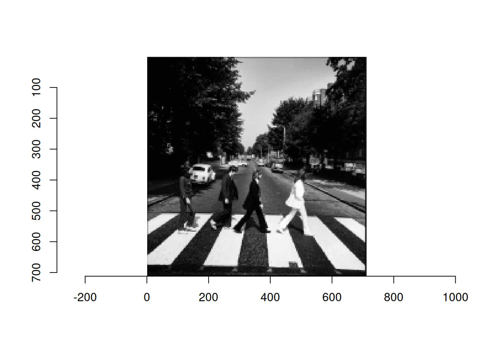

---
title: "Analyse de Données avec R"
author: "Votre Nom"
date: "`r Sys.Date()`"
format: html
---Labs2 - Analyse en composante Principale et au-delà
$$
$$
Statistiques avec R à l’Ensai
Le Logiciel R est libre et disponible sur divers plateformes sur cette page et le logiciel Rstudio est une interface agréable pour l’utilisation de R Vous pouvez installer ces logiciels sur votre ordinateur, toutefois il faut être prêt à gérer soi-même les problèmes de version, d’installation etc.
Pour plus de sérénité il est préférable d’utiliser les serveurs auqxuels vous pouvez vous connecter par l’url suivante (depuis n’importe où)
http://clust-n1.ensai.fr ; ou ; http://clust-n2.ensai.fr
Pour accéder en plus à une interface graphique, par exemple pour utiliser shiny et notamment Factoshiny, il faut être à l’ENSAI et utiliser l’adresse
http://clust-n1.domensai.ecole ; ou ; http://clust-n2.domensai.ecole
De bonnes pratiques
Préparation de l’environnement
- Ouvrir un navigateur web et se connecter au serveur de calcul.
- Créer un Projet (File –> New Project) ou bien en cliquant en haut à droite. Le travail par projet facilite l’accès aux données (notamment lorsque l’on passe d’un ordinateur à l’autre) et permet surtout de “zapper” d’un projet à un autre.
- Choisissez Créer un projet depuis un Nouveau Repertoire, nommez le
MAF_TD2(comme toujours en programmation on évite les caractères spéciaux, c’est-à-dire, les accents, les espaces entre autres) - Pour pouvoir garder le code et l’interprétation des résultats au même endroit nous allons utiliser un type de document Quarto qui est adapté pour mélanger code et texte. Quarto accepte du code R mais aussi Python et Julia. Créer un fichier
TP2.qmd. Vous pouvez utiliser le fichier d’exemple. - Passez en mode
source(en haut à gauche) au lieu deVisualceci permet de mieux comprendre la structure d’un document quarto.
Gestion de packages
Nous utilisons la suite de packages tidyverse pour la manipulation de données, FactomineR pour la mise en oeuvre des analyses factorielles et éventiuellement factoextra pour des sorties plus jolies. (pour une exploration plus interactive on pourra aussi utiliser Factoshiny ou explor).
Tip
Une bonne pratique consiste à ne charger que le nombre minimal de packages nécessaires. Evitez de commencer tous les codes avec la même liste de package, pesez l’intérêt de chacun d’eux.
Structure Document Quarto
Un document Quarto se divise en plusieurs sections clés qui facilitent l’organisation de l’analyse, l’intégration de code, et la présentation des résultats. Voici une présentation des principales composantes :
En-tête YAML
C’est la section de métadonnées du document. Elle est située en haut du fichier et est encadrée par des lignes —. On y définit des informations essentielles telles que : title : le titre du document ; author : l’auteur ou les auteurs du document ; date : la date de création, qui peut être dynamique avec R, par exemple en utilisant date: “r Sys.Date()” ; format : le format de sortie (HTML, PDF, Word, revealjs pour les présentations, etc.).
Exemple d'en-tête YAML :Texte en Markdown
La rédaction du texte dans Quarto utilise la syntaxe Markdown pour structurer le contenu de manière simple et lisible. Markdown permet de formater le texte (titres, listes, liens, etc.) sans avoir à écrire du code complexe. Par exemple :
# pour les titres (niveau 1, 2, etc. avec ##, ###...),
- ou * pour les listes,
[lien](url) pour les liens.Exemple :
## Introduction
Ce document présente une analyse de données en utilisant **R**.
- Point 1
- Point 2Le markup langage markdown permet aussi d’insérer des formules mathématiques, comme du latex.
$$x_{+k}= \sum_{i=1^n} x_{ik}$$Blocs de Code
Quarto permet d’intégrer du code R (mais aussi Python, et Julia) grâce à des blocs de code, chunks. Les blocs de code sont délimités par trois accents graves (triple backtick), avec le langage spécifié entre accolades ({}). Les blocs peuvent exécuter du code directement dans le document et afficher les résultats en ligne.
Exemple de bloc de code en R :
```{r}
#| label: chunk_example
#| eval: false
# Calcul simple
2+2
```Les options de rendu du bloc de code peuvent être précisées. Par exemple ici
#| label: identifie le morceau de code, pratique pour identifier les erreurs
#| eval: false permet de ne pas executer le code
Une présentation plus complète des options, pour un rendu plus fin est disponible sur le site de Quarto.
Le bloc peut être défini en tapant
- manuellement les triples backticks,
- ou en utilisant le menu Code –> Insert Chunk,
- ou avec le raccourci CTRL + ALT + i
Rendu et exportation du document
Une fois le document terminé, on peut le rendre dans le format souhaité en utilisant la commande suivante dans le terminal quarto render mon_document.qmdou en cliquant sur Render dans RStudio.
Cette commande crée une version finalisée du document dans le format spécifié (HTML, PDF, etc.).
Avec Quarto on peut tout autant faire des slides, des rapports en pdf, en word etc. Ceci permet de s’assurer que les résulats présentés sont ceux de l’analyse et c’est un premier pas important dans le sens d’assurer plus de reproductibilité en science. (d’autres outils sont utiles voir ici )
C’est très utile en TP puisque vous pouvez commenter les analyses proposées, les résultats obtenus directement dans le fichier qui contient les codes permettant d’obetenir ces résultats.
Plus largement, en suivant cette structure, vous pouvez organiser vos analyses de manière professionnelle et claire.
Création du document
Lors de la mise en place de l’analyse, on peut éxécuter chaque chunk avec le raccourci CTL + Enter, ou en cliquant sur la petite flèxche verte en haut à droite du chunk.
Le jour du dépassement
Les méthodes d’analyse factorielles sont utiles pour l’exploration de données, soit en tant que telle soit dans une phase préparatoire à un travail de modélisation. Il est utile de disposer à la fois d’outils interractifs pour l’exploration, mais également de garder une trace de l’exploration avec un document bilan.
Nous allons dans ce TP utiliser un fichier TP2.qmd pour garder une trace des analyses faites mais nous pourrons en parallèle utiliser le potentiel d’une exploration plus interactive soit avec Factoshiny soit avec explor selon ce que vous préférez.
Dans ce TP nous allons explorer un premier exemple en détail avec une démarche bien guidée tandis que le second exemple a pour objectif de vous laisser face aux données en autonomie, pour vérifier que vous voyez comment aborder un jeu de données avec les méthodes d’analyse factorielle.
Description des données
Le jeu de données utilisé dans ce premier cas pratique provient du site web de Global Footprint Network. Il contient les résultats d’empreinte écologique et de biocapacité pour 184 pays.
Les données sont disponibles sur ce lien.
Quelques définitions
Le calcul de l’empreinte écologique et de la biocapacité nous aide à répondre à la question de recherche fondamentale : Quelle est la demande des êtres humains envers les surfaces biologiquement productives (empreinte écologique) par rapport à la quantité que la planète (ou la surface productive d’une région) peut régénérer sur ces surfaces (biocapacité) ?
- Hectare global (gha) : C’est l’unité choisie pour exprimer toutes les quantités d’intérêt concernant la consommation/émission de carbone. Une unité de surface correspondant à la productivité moyenne d’un hectare de terres mondiales. Un hectare de terres agricoles vaudra plus d’hectares globaux qu’un hectare de désert.
- Empreinte écologique (en gha par personne) : Le nombre de gha requis pour produire les besoins et absorber les déchets d’un pays.
- Biocapacité (en gha) : La capacité d’un pays à produire ce dont il a besoin et à absorber ses déchets (réserve écologique).
- Jour de dépassement : Jour de l’année où la demande d’un pays dépasse sa biocapacité annuelle.
L’unité utilisé pour comparer est le Global Hectare (gha): Unité de surface qui correspondrait à la production moyenne d’un hectare du monde. Un hectare de champ vaudra donc plus de global hectare qu’un hectare de desert.
Le gha par personne correspond à une production (ou consommation) globale d’une unité, (ici un pays) divisé par le nombre d’habitants dans cette unité.
Les Variables disponibles sont
- life_expectancy : Espérance de vie moyenne (années).
- hdi : Indice de développement humain.
- per_capita_gdp : PIB par habitant (USD).
- region : Région géographique.
- income_group : Catégorie de revenu (HI : Haut, UM : Moyen supérieur, LM : Moyen inférieur, LI : Faible).
- pop : Population (en millions).
- total_prod : Production totale (gha par personne) la production du pays par habitant.
- total_cons : Consommation totale (gha par personne) la consommation par habitant.
- biocapacity : La production durable (gha par personne) par habitant, ce que peut fournir le pays ramené par habitant.
- number_of_countries_required : Nombre de pays nécessaires pour satisfaire la consommation (total_cons/biocapacity)
- number_of_earths_required : Nombre de terres dont on aurait besoin si tout le monde faisait comme dans le pays en question (nb gha par personnes du pays / 1.583 (nb de gha par habitant de la terre, ce chiffre est mis à jour chaque année))
- overshoot_day : Jour de dépassement (numéro du jour dans l’année).
Des détails supplémentaires sont disponibles ici
Objectifs
Les relations entre les différentes mesures de l’empreinte écologique et les caractéristiques des pays.
Chargement des Données
- Charger les données
Analyse Exploratoire des Données
Pouvez vous indiquer le nombre de lignes et de colonnes ?
Proposez des résumés numériques pour chaque variable, ainsi qu’une étude des corrélations.
Pour le moment, on va supprimer les données manquantes (on verra par la suite comment gérer ce problème de manière plus satisfaisante). Pour ceci on peut utiliser drop_na du package tidyverse ou na.omit de R Base.
Construire une ACP
Quel poids choisir pour les pays ?
Quelle métrique choisir ?
Quelles variables met-on en variables supplémentaires ?
Quelle est l’inertie portée par l’axe 1 , l’axe 2, l’axe 3 ?
Commentez la qualité de la représentation sur le plan (1-2), puis (1-3).
De quelles variables nous parle l’axe 1 ? l’axe 2 ? Pour répondre à cette question on regardera le cercle des corrélations mais aussi les contributions des variables à la création des axes.
Que pensez vous du graphe des individus ? Quels sont les individus atypiques ? Quels sont les pays les mieux représentés ?
Comment l’ACP est-elle modifiée si on retire Singapour de l’analyse ?
De nombreuses variables nous parlent de l’empreinte écologique, et les variables nous parlant du développement du pays sont moins nombreuses. On peut rééquilibrer l’importance des variables avec une méthodes vue en cours, laquelle ?
On souhaite distinguer deux groupes de variables : les variables concernant l’empreinte carbone et les variables portant sur le développement du pays.
Faites 2 ACP différentes sur chacun de ces deux groupes. Quelle est la première valeur propre dans les deux cas ?
Rappelez en quoi la méthode mentionnée plus haut est une ACP particulière.
On réaliser une AFM grâce la fonction
̀MFAde FactoMineR. Reprenez l’analyse précédente avec ce nouvel équilibre entre les différentes variables équilibrées. Quelles sont les informations que vous pouvez retenir ?
Attention on ne peut pas indiquer de variables qualitatives supplémentaires dans MFA
overshoot_quanti <- overshoot_dta |>
select(where(is.numeric))overshoot_mfa <- MFA(overshoot_quanti,
group = c(4, 6), ## 4 variables dans le premier groupe, les 6 suivantes dans le groupe 2
type = rep("s", 2) ## le groupe est de type quanti qu'on veut normaliser par l'eacrt type, meme chose pour le groupe 2
)En vous servant de l’aide, indiquez ce que signie ce que l’argument
type = rep("s",2)signifie.La visualisation est elle grandement modifiée, est-ce surprenant ?
ACP pour compresser l’information : analyse d’images.
Cet exercice propose d’utiliser l’ACP pour compresser une image.
- Connaissez-vous cette photo ?

Objectif
Une image en noir et blanc peut être envisagée comme une matrice où chaque contient le niveau de gris du pixel qu’il représente. On stocke donc autant de valeurs que de pixel. Peut on compresser l’information en utilisant l’ACP ?
Préparation
- Téléchargez cette image en suivant {le lien suivant](https://marieetienne.github.io/MAF/img/abbey_road.jpg) et placez la dans votre répertoire de travail dans
img/abbey_road.jpg.
Nous allons utiliser les packages suivants: Nous allons utiliser les packages
library(imager) ## pour manipuler les images
library(parallel) # pour les calculs sur les imagesPar ailleurs pour manipuler les images, nous aurons besoin de quelques fonctions disponibles ci-dessous
Code
# Function to extract blocks in parallel, handling edge cases
complete_image_with_block_size <- function(channel_matrix, block_size) {
h <- dim(channel_matrix)[1] # Image height
w <- dim(channel_matrix)[2] # Image width
h_complete <- ifelse( h %/% block_size == h/block_size, h, (h %/% block_size +1)*block_size)
w_complete <- ifelse( w %/% block_size == w/block_size, w, (w %/% block_size +1)*block_size)
channel_matrix_complete <- matrix(0, ncol= w_complete, nrow = h_complete)
channel_matrix_complete[1:h,1:w] <- channel_matrix
return(channel_matrix_complete)
}
image2block <- function(channel_matrix, block_size) {
h <- dim(channel_matrix)[1] # Image height
w <- dim(channel_matrix)[2] # Image width
if( h %/% block_size != h/block_size ){
stop("height is not a multiple of block size")
}
if( w %/% block_size != w/block_size ){
stop("width is not a multiple of block size")
}
# Get the number of cores available for parallel processing if ubuntu, set to 1 with windows
num_cores <- ifelse(.Platform$OS.type == "unix", parallel::detectCores() - 1, 1)
# Define indices for parallelization
indices <- expand.grid(seq(1, h, by = block_size), seq(1, w, by = block_size))
# Define the function to extract a block from the matrix, handling edge effects
extract_single_block <- function(index) {
i <- as.numeric(index[1])
j <- as.numeric(index[2])
print(i)
# Handle cases where the block exceeds the image size (edge cases)
block <- channel_matrix[i:min(i + block_size - 1, h), j:min(j + block_size - 1, w)]
# Flatten the block into a single row
# If the block is smaller than 4x4 (due to edges), pad with NA or 0 to maintain consistent size
flattened_block <- as.vector(block)
# Pad the flattened block with NA (or 0 if you prefer) to ensure each block is of size block_size^2
padded_block <- rep(NA, block_size * block_size)
padded_block[1:length(flattened_block)] <- flattened_block
return(padded_block)
}
# Parallelize the block extraction using mclapply
blocks <- parallel::mclapply(1:nrow(indices), function(k) extract_single_block(indices[k,]), mc.cores = num_cores)
# Combine the results into a matrix
blocks_matrix <- do.call(rbind, blocks)
return(blocks_matrix)
}
block2image <- function(image_blocks, nrow_img, ncol_img, block_size) {
n_col_block <- ncol_img/block_size
n_row_block <- nrow_img/block_size
X_reconstruction_list <- lapply(1:n_col_block, function(jblock){
list_rows <- lapply(1:n_row_block, function(iblock){
matrix( image_blocks[(jblock-1)*n_row_block + iblock,], ncol = block_size)
})
do.call(rbind, list_rows)
})
img <-do.call(cbind, X_reconstruction_list)
return(img)
}Pour bien comprendre comment sont décomposées les images en bloc de 4 par 4, on peut créer une matrice avec des cases numérotées et constater comment elle est transformée.
On choisit des blocks de 4x4 pixels.
block_size <- 4Un bloc de 4x4 pixels est un individu à 16 variables.
block_size <- 4
test_image <- as.cimg(array(1:(20*16), dim= c(20, 16, 1, 1)), dim=c(32,16))
test_image[,]
plot(test_image, interpolate = FALSE )
test_image_blocks <- image2block(test_image[,], block_size = 4)
test_image_blocks
block2image(test_image_blocks, nrow(test_image), ncol(test_image), block_size = 4)
exemple2 <- matrix(10*rep(1:9, each=16), byrow= TRUE, ncol = 16)
exemple2
exemple2_img <- block2image(exemple2, nrow_img = 12, ncol=12, block_size = 4)
plot(as.cimg(exemple2_img), interpolate = FALSE )On encode donc l’image des Beattles avec ce système de patches.
Pour charger avec R, on utilise le package imager et la fonction load.image. puis la fonction grayscalepour bien s’assurer que l’image est codée en niveaux de gris.
image <- load.image('img/abbey_road.jpg')
image <- grayscale(image)
dim(image)[1] 709 709 1 1plot(as.cimg(image), interpolate = 0, rescale = FALSE, axes = FALSE)
## on complete l'image pour qu'elle ait une dimension multiple de la taille des blocks
abbey_comp <- complete_image_with_block_size(image, block_size = block_size)
plot(as.cimg(abbey_comp), interpolate = 0, rescale = FALSE, axes = FALSE)
abbey_matrix <- image2block(abbey_comp, block_size = block_size)
#head(abbey_matrix)- Que représente le baycentre de ce nuage de points ?
barycentre <- abbey_matrix |> as_data_frame() |> summarise_all(mean) |> as.numeric()
patch_moy <- barycentre |> matrix(ncol=16, nrow=1)
block2image(patch_moy, nrow_img = 4, ncol_img = 4, block_size = 4) |> as.cimg(width = 4, col=4) |> plot( interpolate = 0, axes = FALSE, rescale=FALSE)
##pour voir les différences on peut rescaler les niveaux de gris
block2image(patch_moy, nrow_img = 4, ncol_img = 4, block_size = 4) |> as.cimg(width = 4, col=4) |> plot( interpolate = 0, axes = FALSE, rescale=TRUE)ACP sur les patches
Faire une ACP sur les données contenues dans
abbey_matrix(Faut il faire une ACP normée ou non ? y a t il des variables supplémentaires)Combien d’axes proposez vous de garder ?
abbey_pca <- PCA(abbey_matrix, scale.unit=FALSE, ncp=block_size*block_size, graph=FALSE)
abbey_pca$eig eigenvalue percentage of variance cumulative percentage of variance
comp 1 1.7163307540 93.50934097 93.50934
comp 2 0.0391909818 2.13520784 95.64455
comp 3 0.0302253007 1.64673851 97.29129
comp 4 0.0117894007 0.64231156 97.93360
comp 5 0.0101441613 0.55267543 98.48627
comp 6 0.0077183630 0.42051279 98.90679
comp 7 0.0049202986 0.26806831 99.17486
comp 8 0.0043789094 0.23857227 99.41343
comp 9 0.0024540419 0.13370141 99.54713
comp 10 0.0023721193 0.12923809 99.67637
comp 11 0.0018822115 0.10254687 99.77891
comp 12 0.0013888857 0.07566944 99.85458
comp 13 0.0010382253 0.05656472 99.91115
comp 14 0.0007401018 0.04032231 99.95147
comp 15 0.0006473342 0.03526814 99.98674
comp 16 0.0002434073 0.01326134 100.00000- Que représente un vecteur propre ici ?
Reconstruction avec 1 composante
- on souhaite reconstruire l’image à partir de l’information contenue dans une seule composante. Expliquez à quoi correspond le code ci-dessous
abbey_recons_centred <- abbey_pca$ind$coord[,1,drop=FALSE] %*% t(abbey_pca$svd$V)[1,,drop=FALSE]
#on rajoute la moyenne
# X_recon_centred <- block2image(abbey_recons_centred, nrow_img = nrow(abbey_comp), ncol_img = ncol(abbey_comp), block_size = 4)
# plot(as.cimg(array(X_recon_centred, dim=dim(abbey_comp))), interpolate = FALSE, rescale = FALSE)
abbey_recons <- abbey_recons_centred |> sweep(2, barycentre, FUN = "+")
## doit etre en 0 et 1
abbey_recons_norm <- pmin(abbey_recons,1)
X_recon <- block2image(abbey_recons_norm, nrow_img = nrow(abbey_comp), ncol_img = ncol(abbey_comp), block_size = block_size)
plot(as.cimg(array(X_recon, dim=dim(abbey_comp))), interpolate = FALSE, rescale = FALSE)
Reconstruction avec 2 composantes
- Modifier le code pour garder 2 composantes principales (taille de l’image divisée par 8 au lieu de 16)
Evaluation de l’erreur de reconstruction
Une autre manière de faire serait de ne garder que la valeur moyenne pour chaque patch. On compare les deux méthodes ci-dessous.
- Ajoutez la comparaison avec la méthode qui utilise les 2 premiers composantes principales et commentez
rmse_pca <- mean((abbey_recons-abbey_matrix )^2)
#simple filter
abbey_filter <- matrix(rowMeans(abbey_matrix), ncol = 16, nrow = nrow(abbey_matrix))
rmse_filter <- mean((abbey_filter-abbey_matrix )^2)Exercice d’extension
- On peut aussi appliquer la méthode à une image couleur en traitant séparément les canaux R,G,B puis recombiner.
- Quel intérêt y aurait-il à traiter simultanément les 3 couleurs plutot que séparément ?
Remarque: On a représenté l’image dans un espace de plus petite dimension en appliquant un filtre sur l’image de départ. Plutôt que de choisir un filtre standard (la moyenne de tous les pixels d’un patch), on a appris le meilleur filtre, (celui qui fait perdre le moins d’information).
En effet on a appris une transformation qui envoie une image de 5.06944^{5} pixels dans un espace de dimension 3.1684^{4}. Ce sont ces idées qui sont utilisées dans les réseaux de neurones convolutionnels à la base de l’IA pour les images.
- Vous pouvez tester d’autres tailles de patches (
block_size=8ou16) et observer l’effet sur la variance expliquée et la qualité de reconstruction.